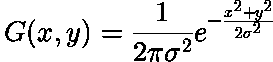

☆*:..:*환영 합니다*:..:*☆
☆*:..:*환영 합니다*:..:*☆지식정보화사회에서 필연적으로 따르는 정보통신기술의 발달은 인터넷, 인트라넷 등의 대중화를 가져왔으며, 인터넷의 대중화는 문자뿐 아니라 음성, 영상 등 멀티미디어 정보를 급속하게 증가시키고 있다.
이러한 멀티미디어 정보는 정지영상과 컴퓨터에서 생성하는 합성영상, 애니메이션, 카메라를 이용해서 얻을 수 있는 비디오 및 음성, 음향 등과 같은 오디오 자료를 포함한다.
영상검색에 관한 연구는 사용자의 간단한 명령으로 원하는 영상자료를 신속하게 찾아 볼 수 있도록 하는데 초점을 두고 있다.
영상자료의 효율적인 검색을 수행하기 위한 접근방법들은 문자기반과 의미론기반 및 내용기반의 세가지로 나누고 있다...
박사 학위 논문 학위 논문? 중 에서

영상 처리란?
영상 과학영상 과학에 대해 더 보기 분야에서 영상처리라는 것은 사진이나 비디오 같은 영상물을 입력하여 일종의 신호처리의 형태를 취하여 수학적인 연산을 통해 영상을 처리하는 것을 말한다. 영상처리의 출력물은 영상 자체일수도 있고 또한 관련된 영상의 특성이나 변수의 한 세트 일 수 있다.
영상과학 분야에서 영상처리라는 것은 사진이나 비디오 같은 영상물을 입력하여일종의 신호처리신호처리에 대해 더 보기의 형태를 취하여 수학적인 연산을 통해 영상을 처리하는 것을 말한다. 영상처리의 출력물은 영상 자체일수도 있고 또한 관련된 영상의 특성이나 변수의 한 세트 일 수 있다.
대부분의 영상처리 기술은 2차원의 신호로 된 영상을 처리하며, 표준 신호처리 기술을 영상에 적용하는 것이다.통상 영상처리는 디지털 영상처리디지털 영상처리에 대해 더 보기,와 관련이 있지만 광학이나 아나로그 영상처리아나로그 영상처리에 대해 더 보기도 물론 가능하다.
이 글은 이들 모두에게 적용하는 일반적인 기술에 대해서 기술한다. 1차적으로 입력 영상을 생산하고 있는 영상의 취득은 이메이징과 관련된다. 엄밀히 말해서 영상처리는 컴퓨터 그래픽컴퓨터 그래픽에 대해 더 보기과 컴퓨터 비젼컴퓨터 비젼에 대해 더 보기이다.
컴퓨터 그래픽 분야에서 영상들은 자연의 광경으로 부터 카메라와 같은 영상 도구를 통해 취득되는 것이 아니라 개체, 주변 환경, 그리고 조명에 의해 조작된 물리적인 모델들로 부터 수작업으로 만들어진다.
이와는 달리, 컴퓨터 비젼은 종종 머신.컴퓨터.소프트웨어가 하나의 영상 혹은 연속되는 영상들 (비디오나 3D 전신 MRI 스캔 영상)의 신체적인 내용들을 해석하려는 것으로 부터 고 수준의 영상 처리가 요구된다.
현대과학과 기술에서 영상들은 과학적인 비주얼레이션이 점점 더 중요성이 증가하는 것으로 더욱 더 넓은 범위에서 획득한다 (대용량의 복소수 의 과학적이고 실험적인 자료). 예로서 유전자 연구에서 마이크로 어레이마이크로 어레이에 대해 더 보기 데이터 (Microarray란 유전자 조각들이 유리표면(칩)에 부착하여 배열된 것을 말한다.)나 주식 증권 금융 분야에서 실시간 분산투자 등을 들 수 있다.
위키피디아위키피디아에 대해 더 보기의 내용을 수정하였음.


왼쪽의 애니메이션은 두 박스카(boxcar) 함수(왼쪽)와 두 가우시안(Gaussian) 함수(오른쪽)의 컨볼루션을 그래픽으로 보여줍니다. 회색 영역은 g(τ)f(t−τ)의 곱을 t의 함수로 나타낸 것으로, 그 면적을 t에 따라 계산한 값이 바로 컨볼루션입니다. 여기서 강조해야 할 한 가지 특징은, 이 그림들이 모두 대칭 함수만을 다루고 있기 때문에 전달되지 않는 부분인데, 함수 g는 반드시 반사(미러링)된 후에 f 위로 이동시키며 적분해야 한다는 점입니다.
가우시안 스무딩 연산자는 2차원 컨볼루션(convolution) 연산자로,
이미지를 ‘블러(blur)’ 처리하여 세부 정보와 잡음을 제거하는 데 사용됩니다.
이러한 점에서 평균 필터(mean filter)와 유사하지만, 가우시안(‘종 모양’) 곡선을
나타내는 다른 커널을 사용합니다. 이 커널은 특별한 성질을 가지며, 아래에 자세히 설명되어 있습니다.

2차원에서 등방성(i.e. circularly symmetric) 가우시안은 다음과 같은 형태를 가집니다.
위 오른쪽 그림에 이 분포가 나타나 있습니다. 이는 평균이 (0,0)이고 표준편차 σ=1인
가우시안 분포입니다. 가우시안 스무딩의 기본 아이디어는 이 2차원 분포를 ‘점 확산(point-spread)’
함수로 사용하는 것이며, 이는 컨볼루션을 통해 구현됩니다. 이미지는 이산적인 픽셀들의 집합으로
저장되므로, 컨볼루션을 수행하기 전에 가우시안 함수를 이산적으로 근사해야 합니다.